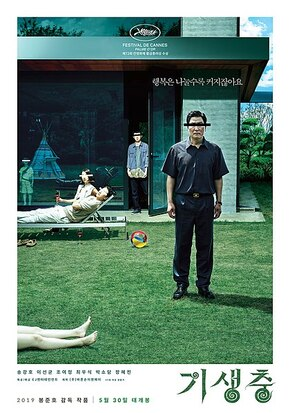
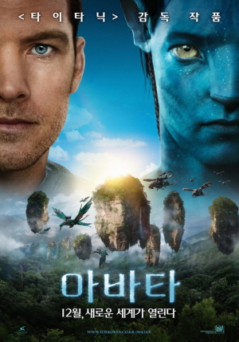
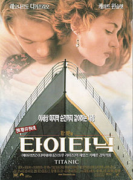
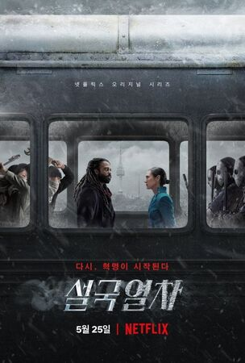

| 순위 |
제목 |
포스터 |
줄거리 |
바로가기 |
| 1 |
기생충 |
 |
허름한 반지하에 사는 기택 가족에게 돈을 벌 기회가 찾아온다.
친구의 소개로 부잣집 딸 다혜의 과외 선생님을 맡게 된 기택의 아들,
기우는 기대감에 부푼 채 박 사장의 저택에 들어간다.
극과 극의 삶을 사는 두 가족의 예측 불가능한 만남이 시작된다.
|
클릭 |
| 2 |
인터스텔라 |
 |
세계의 경제 및 정부가 완전히 붕괴되고,
과거의 잘못으로 인해 인류에게 최악의 미래가 다가온다.
광활한 우주로 떠나 인간이 살 수 있는 행성을 찾으러 나선
우주인들의 감동적이고 위대한 여정이 시작된다. |
클릭 |
| 3 |
아바타 |
 |
전직 해병대원 제이크 설리는 외계 행성 판도라를 정탐하는 임무를 맡는다.
제이크는 자신의 아바타를 통해 원주민 나비족에게 잠입하고, 뜻하지 않게 그곳의 전사와 사랑에 빠진다.
그는 에너지가 고갈되어 가는 지구와 자신을 동료로 받아들여 준 판도라 행성의 나비족 사이에서 갈등한다.
|
클릭 |
| 4 |
타이타닉 |
 |
1912년 4월 귀족 가문의 딸인 로즈는 타이태닉호에 승선한다.
사랑하지도 않는 남자와 결혼해야 한다는 사실에 절망한 로즈는 자살을 시도하지만,
마침 가난한 화가인 잭이 구해주게 되고 둘은 서로 사랑에 빠진다.
미래를 함께 약속하며 행복한 시간을 보내는 것도 잠시, 로즈와 잭은 예상치 못한 난관과 마주하게 된다.
|
클릭 |
| 5 |
설국열차 |
 |
기상 이변으로 빙하기가 온 지구, 생존자들을 태운 열차가 끝없이 달리고 있다.
빈곤한 꼬리칸과 호화로운 머리칸으로 나뉘어진 불평등한 열차 속 세상에서 꼬리칸 사람들이 반란을 시작한다.
꼬리칸과 열차 전체를 해방시키기 위해 권력자 윌포드가 있는 앞쪽을 향해 질주한다.
그런데 이들의 앞에 예상 밖의 상황들이 기다리고, 마주하고 싶지 않은 진실이 다가온다.
|
클릭 |